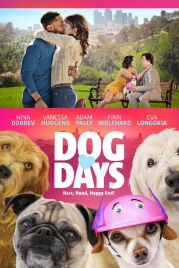

#10582 Dog Days
 
 IMDB-Wertung: 6.1 / 10
IMDB-Wertung: 6.1 / 10  Tomatometer: 62
Tomatometer: 62  Metascore: 47
Metascore: 47 
In Los Angeles kreuzen sich die Wege mehrerer Menschen, die eines gemeinsam haben: ein Herz für Hunde. Als Elizabeth von ihrem Freund betrogen wird, braucht nicht nur ihr Hund Sam eine Therapie. Tara schwärmt für sexy Tierarzt Dr. Mike, während Chaot Dax auf Vierbeiner Charlie aufpassen muss - prompt vertilgt der Hund einen Haschkuchen. Walter trauert um seinen entlaufenen Mops Mabel, Grace und Kurt wollen ihrer Adoptivtochter Amelia ein warmes Zuhause bieten. Doch sie ist bei ihrer neuen Familie unglücklich - bis sie einen kleinen Streuner aufliest...
Jahr: 2018
Dauer: 113 Minuten
FSK: 6
Land: USA Studio: LD EntertainmentTonspuren: DTS - ,
Untertitel: Deutsch,
Auflösung: 1080p (1920x800) Größe: 6154 MB
Genre: Drama, Komödie
Regisseur: Ken Marino
Drehbuch: Elissa Matsueda, Erica Oyama, Elissa Matsueda
Soundtrack: Matt Novack, Craig Wedren
Darsteller:
 Nina Dobrev als Elizabeth
Nina Dobrev als Elizabeth Vanessa Hudgens als Tara
Vanessa Hudgens als Tara Adam Pally als Dax
Adam Pally als Dax Eva Longoria als Grace
Eva Longoria als Grace Rob Corddry als Kurt
Rob Corddry als Kurt- Tone Bell als Jimmy
 Jon Bass als Garrett
Jon Bass als Garrett Michael Cassidy als Dr. Mike
Michael Cassidy als Dr. Mike Finn Wolfhard als Tyler
Finn Wolfhard als Tyler Ron Cephas Jones als Walter
Ron Cephas Jones als Walter Thomas Lennon als Greg
Thomas Lennon als Greg- Tig Notaro als Danielle
 Lauren Lapkus als Daisy
Lauren Lapkus als Daisy Jessica St. Clair als Ruth
Jessica St. Clair als Ruth Ryan Hansen als Peter
Ryan Hansen als Peter Tony Cavalero als Stanley
Tony Cavalero als Stanley- Jessica Lowe als Amy
- Mo Gaffney als Mayor Velez
- Jasmine Cephas Jones als Lola
- Elizabeth Phoenix Caro als Amelia
- Casey Deidrick als Jude
- Phoebe Neidhardt als Alexa
- John Gemberling als Ernie
- Arielle Vandenberg als Kristen
 Toks Olagundoye als Nina
Toks Olagundoye als Nina Ken Marino als Carven Wagi
Ken Marino als Carven Wagi David Wain als Wacky Wayne
David Wain als Wacky Wayne Megan Park als Kelli
Megan Park als Kelli- Matt Cordova als Ben
- Rafael Amadeu als Lyft Driver (uncredited)
- Joseph Bezenek als Baby Shower Husband (uncredited)
- Adam Burnette als Audience Member (uncredited)
- Diane Morgan Carpenter als Greg's Mom (uncredited)
- Megan Ashly Cutler als TV Show Audience (uncredited)
- Debby Gerber als Susan with Dog (uncredited)
- Melissa Gomez als New Tricks Volunteer (uncredited)
- Christine Kent als Sounder (uncredited)
- Mannix The Dog als Dog Actor (uncredited)
- Leon Masuda als High School Student (uncredited)
- Mary Lou Matthews als Collie Owner (uncredited)
- Jailyn Osborne als New Tricks Employee (uncredited)
- Antonio Rosa als Charity Event Patron (uncredited)
- Mike Rosenstein als Bearded Clown (uncredited)
- Kerry Westcott als Newsroom Makeup Artist (uncredited)
- Eric Womack als Bear at Vet (uncredited)
- Riley Marino als Ian
- Gina Chiara Ward als Addie
- David Bradfrod als Bones
- Darnell James als Mayor Security
- Dalmatian Chloe als Dalmatian (uncredited)
Datei: X:\2018(A-F)\Dog Days (2018, FSK6, 1920x800).mkv seit 25.01.2019
Festplatte: HD 2017(A-Z)-2018(A-F)
 Es gibt insgesamt 151 Filme in der Gruppe '2018(A-F)'
Es gibt insgesamt 151 Filme in der Gruppe '2018(A-F)'